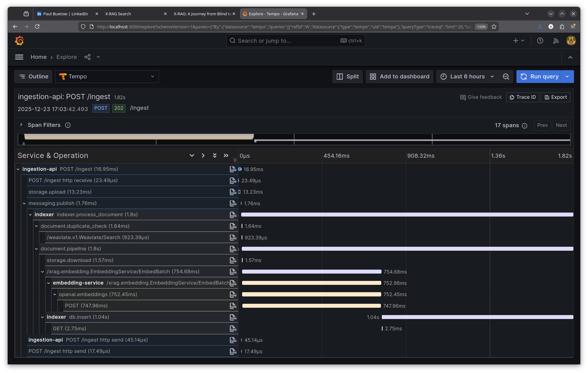
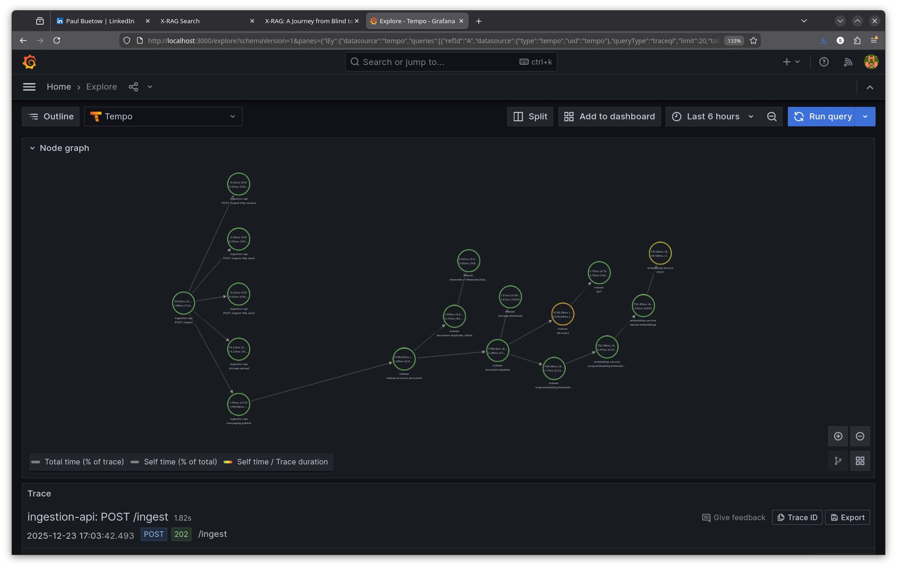
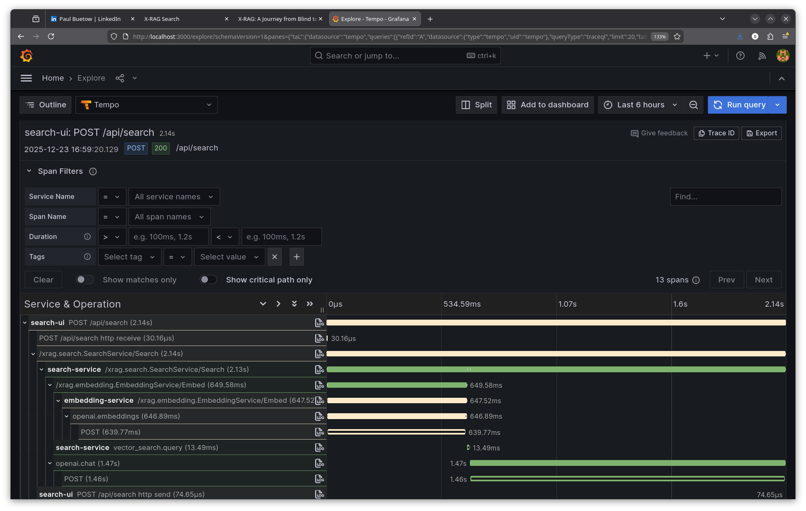
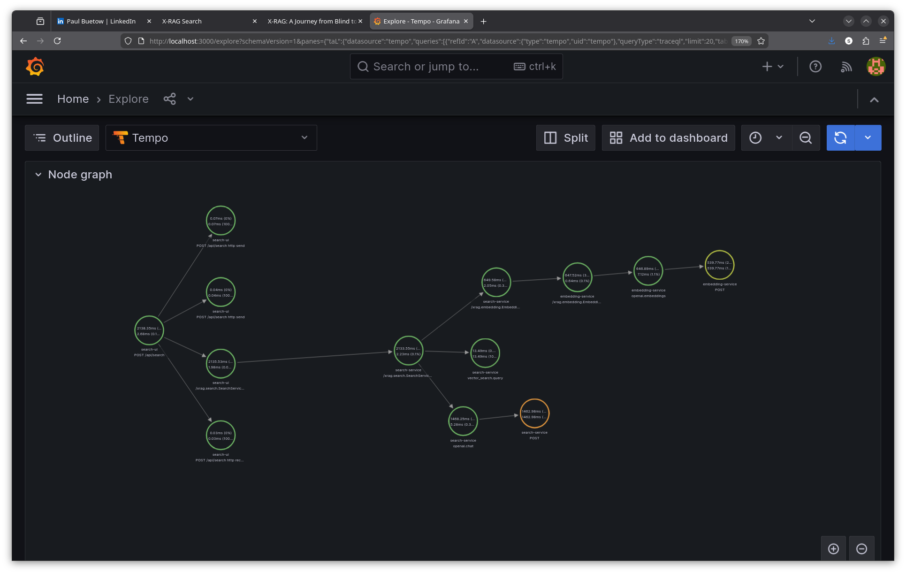
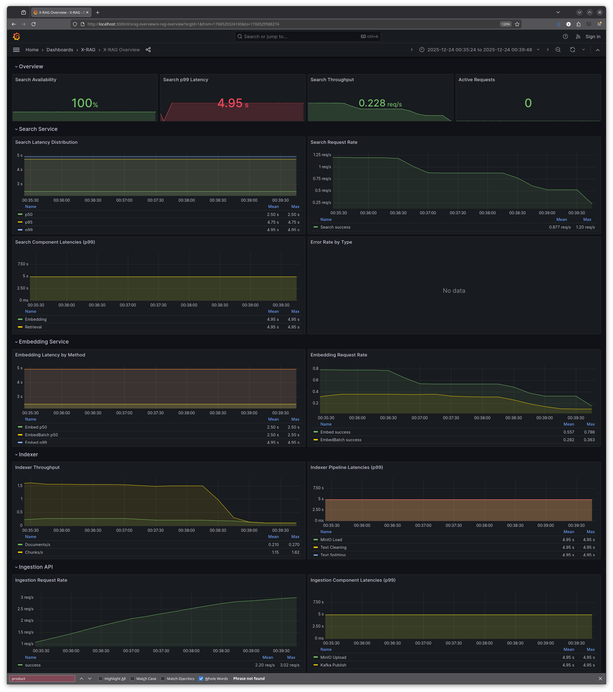
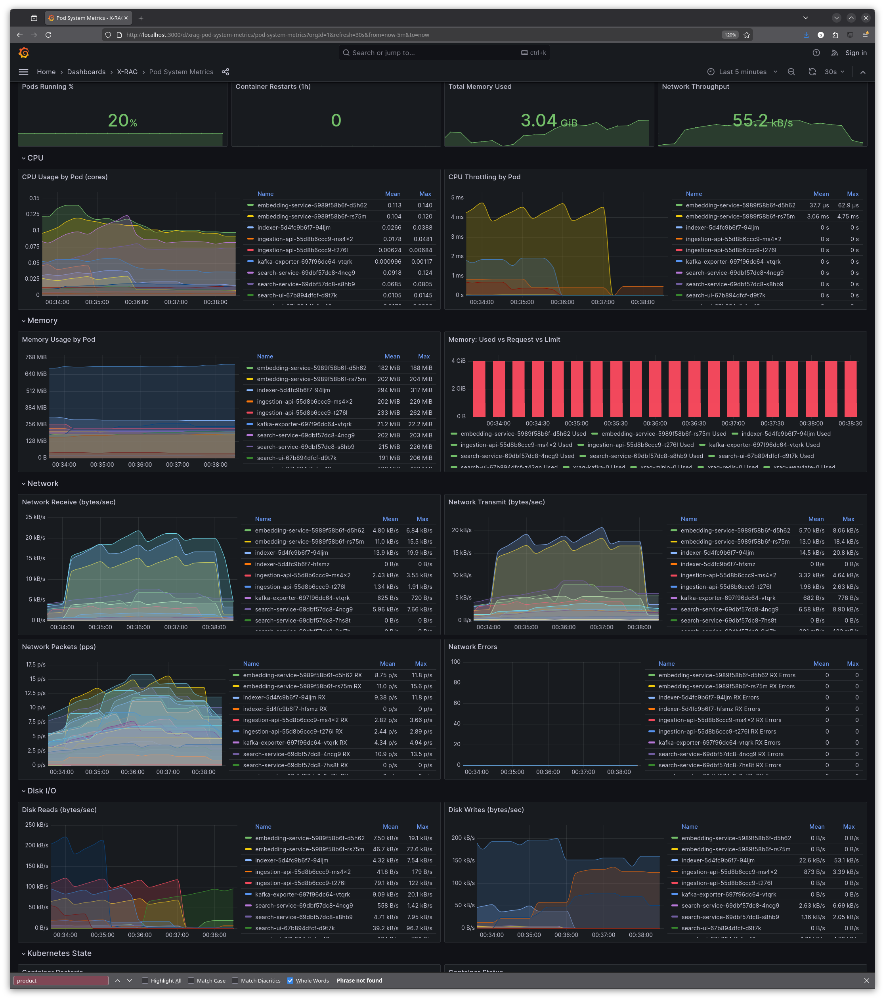

X-RAG Observability Hackathon
Published at 2025-12-24T09:45:29+02:00
This post describes my hackathon efforts adding observability to X-RAG, the extensible Retrieval-Augmented Generation (RAG) platform built by my brother Florian. I made time over the weekend to join his 3-day hackathon (attending 2 days) with the goal of instrumenting his existing distributed system with observability. What started as "let's add some metrics" turned into a comprehensive implementation of the three pillars of observability: tracing, metrics, and logs.
X-RAG source code on GitHub
Table of Contents
What is X-RAG?
X-RAG is the extensible RAG (Retrieval-Augmented Generation) platform running on Kubernetes. The idea behind RAG is simple: instead of asking an LLM to answer questions from its training data alone, you first retrieve relevant documents from your own knowledge base, then feed those documents to the LLM as context. The LLM synthesises an answer grounded in your actual content—reducing hallucinations and enabling answers about private or recent information the model was never trained on.
X-RAG handles the full pipeline: ingest documents, chunk them into searchable pieces, generate vector embeddings, store them in a vector database, and at query time, retrieve relevant chunks and pass them to an LLM for answer generation. The system supports both local LLMs (Florian runs his on a beefy desktop) and cloud APIs like OpenAI. I configured an OpenAI API key since my laptop's CPU and GPU aren't fast enough for decent local inference.
All services are implemented in Python. I'm more used to Ruby, Go, and Bash these days, but for this project it didn't matter—Python's OpenTelemetry integration is straightforward, I wasn't planning to write or rewrite tons of application code, and with GenAI assistance the language barrier was a non-issue. The OpenTelemetry concepts and patterns should translate to other languages too—the SDK APIs are intentionally similar across Python, Go, Java, and others.
X-RAG consists of several independently scalable microservices:
- Search UI: FastAPI web interface for queries
- Ingestion API: Document upload endpoint
- Embedding Service: gRPC service for vector embeddings
- Indexer: Kafka consumer that processes documents
- Search Service: gRPC service orchestrating the RAG pipeline
The Embedding Service deserves extra explanation because in the beginning I didn't really knew what it was. Text isn't directly searchable in a vector database—you need to convert it to numerical vectors (embeddings) that capture semantic meaning. The Embedding Service takes text chunks and calls an embedding model (OpenAI's text-embedding-3-small in my case, or a local model on Florian's setup) to produce these vectors. For the LLM search completion answer, I used gpt-4o-mini.
Similar concepts end up with similar vectors, so "What is machine learning?" and "Explain ML" produce vectors close together in the embedding space. At query time, your question gets embedded too, and the vector database finds chunks with nearby vectors—that's semantic search.
The data layer includes Weaviate (vector database with hybrid search), Kafka (message queue), MinIO (object storage), and Redis (cache). All of this runs in a Kind Kubernetes cluster for local development, with the same manifests deployable to production.
┌─────────────────────────────────────────────────────────────────────────┐
│ X-RAG Kubernetes Cluster │
├─────────────────────────────────────────────────────────────────────────┤
│ ┌─────────────┐ ┌─────────────┐ ┌─────────────┐ ┌─────────────┐ │
│ │ Search UI │ │Search Svc │ │Embed Service│ │ Indexer │ │
│ └──────┬──────┘ └──────┬──────┘ └──────┬──────┘ └──────┬──────┘ │
│ │ │ │ │ │
│ └────────────────┴────────────────┴────────────────┘ │
│ │ │
│ ▼ │
│ ┌─────────────┐ ┌─────────────┐ ┌─────────────┐ │
│ │ Weaviate │ │ Kafka │ │ MinIO │ │
│ └─────────────┘ └─────────────┘ └─────────────┘ │
└─────────────────────────────────────────────────────────────────────────┘
Running Kubernetes locally with Kind
X-RAG runs on Kubernetes, but you don't need a cloud account to develop it. The project uses Kind (Kubernetes in Docker)—a tool originally created by the Kubernetes SIG for testing Kubernetes itself.
Kind - Kubernetes in Docker
Kind spins up a full Kubernetes cluster using Docker containers as nodes. The control plane (API server, etcd, scheduler, controller-manager) runs in one container, and worker nodes run in separate containers. Inside these "node containers," pods run just like they would on real servers—using containerd as the container runtime. It's containers all the way down.
Technically, each Kind node is a Docker container running a minimal Linux image with kubelet and containerd installed. When you deploy a pod, kubelet inside the node container instructs containerd to pull and run the container image. So you have Docker running node containers, and inside those, containerd running application containers. Network-wise, Kind sets up a Docker bridge network and uses CNI plugins (kindnet by default) for pod networking within the cluster.
$ docker ps --format "table {{.Names}}\t{{.Image}}"
NAMES IMAGE
xrag-k8-control-plane kindest/node:v1.32.0
xrag-k8-worker kindest/node:v1.32.0
xrag-k8-worker2 kindest/node:v1.32.0
The kindest/node image contains everything needed: kubelet, containerd, CNI plugins, and pre-pulled pause containers. Port mappings in the Kind config expose services to the host—that's how http://localhost:8080 reaches the search-ui running inside a pod, inside a worker container, inside Docker.
┌─────────────────────────────────────────────────────────────────────────┐
│ Docker Host │
├─────────────────────────────────────────────────────────────────────────┤
│ ┌───────────────────┐ ┌───────────────────┐ ┌───────────────────┐ │
│ │ xrag-k8-control │ │ xrag-k8-worker │ │ xrag-k8-worker2 │ │
│ │ -plane (container)│ │ (container) │ │ (container) │ │
│ │ │ │ │ │ │ │
│ │ K8s API server │ │ Pods: │ │ Pods: │ │
│ │ etcd, scheduler │ │ • search-ui │ │ • weaviate │ │
│ │ │ │ • search-service │ │ • kafka │ │
│ │ │ │ • embedding-svc │ │ • prometheus │ │
│ │ │ │ • indexer │ │ • grafana │ │
│ └───────────────────┘ └───────────────────┘ └───────────────────┘ │
└─────────────────────────────────────────────────────────────────────────┘
Why Kind? It gives you a real Kubernetes environment—the same manifests deploy to production clouds unchanged. No minikube quirks, no Docker Compose translation layer. Just Kubernetes. I already have a k3s cluster running at home, but Kind made collaboration easier—everyone working on X-RAG gets the exact same setup by cloning the repo and running make cluster-start.
Florian developed X-RAG on macOS, but it worked seamlessly on my Linux laptop. The only difference was Docker's resource allocation: on macOS you configure limits in Docker Desktop, on Linux it uses host resources directly. That's because under macOS the Linux Docker containers run on an emulation layer as macOS is not Linux.
My hardware: a ThinkPad X1 Carbon Gen 9 with an 11th Gen Intel Core i7-1185G7 (4 cores, 8 threads at 3.00GHz) and 32GB RAM (running Fedora Linux). During the hackathon, memory usage peaked around 15GB—comfortable headroom. CPU was the bottleneck; with ~38 pods running across all namespaces (rag-system, monitoring, kube-system, etc.), plus Discord for the remote video call and Tidal streaming hi-res music, things got tight. When rebuilding Docker images or restarting the cluster, Discord video and audio would stutter—my fellow hackers probably wondered why I kept freezing mid-sentence. A beefier CPU would have meant less waiting and smoother calls, but it was manageable.
Motivation
When I joined the hackathon, Florian's X-RAG was functional but opaque. With five services communicating via gRPC, Kafka, and HTTP, debugging was cumbersome. When a search request take 5 seconds, there was no visibility into where the time was being spent. Was it the embedding generation? The vector search? The LLM synthesis? Nobody would be able to figure it out quickly.
Distributed systems are inherently opaque. Each service logs its own view of the world, but correlating events across service boundaries is archaeology. Grepping through logs on many pods, trying to mentally reconstruct what happened—not fun. This was the perfect hackathon project: Explore this Observability Stack in greater depth.
The observability stack
Before diving into implementation, here's what I deployed. The complete stack runs in the monitoring namespace:
$ kubectl get pods -n monitoring
NAME READY STATUS
alloy-84ddf4cd8c-7phjp 1/1 Running
grafana-6fcc89b4d6-pnh8l 1/1 Running
kube-state-metrics-5d954c569f-2r45n 1/1 Running
loki-8c9bbf744-sc2p5 1/1 Running
node-exporter-kb8zz 1/1 Running
node-exporter-zcrdz 1/1 Running
node-exporter-zmskc 1/1 Running
prometheus-7f755f675-dqcht 1/1 Running
tempo-55df7dbcdd-t8fg9 1/1 Running
Each component has a specific role:
- Grafana Alloy: The unified collector. Receives OTLP from applications, scrapes Prometheus endpoints, tails log files. Think of it as the central nervous system.
- Prometheus: Time-series database for metrics. Stores counters, gauges, and histograms with 15-day retention.
- Tempo: Trace storage. Receives spans via OTLP, correlates them by trace ID, enables TraceQL queries.
- Loki: Log aggregation. Indexes labels (namespace, pod, container), stores log chunks, enables LogQL queries.
- Grafana: The unified UI. Queries all three backends, correlates signals, displays dashboards.
- kube-state-metrics: Exposes Kubernetes object metrics (pod status, deployments, resource requests).
- node-exporter: Exposes host-level metrics (CPU, memory, disk, network) from each Kubernetes node.
Everything is accessible via port-forwards:
- Grafana: http://localhost:3000 (unified UI for all three signals)
- Prometheus: http://localhost:9090 (metrics queries)
- Tempo: http://localhost:3200 (trace queries)
- Loki: http://localhost:3100 (log queries)
Grafana Alloy: the unified collector
Before diving into the individual signals, I want to highlight Grafana Alloy—the component that ties everything together. Alloy is Grafana's vendor-neutral OpenTelemetry Collector distribution, and it became the backbone of the observability stack.
Grafana Alloy documentation
Why use a centralised collector instead of having each service push directly to backends?
- Decoupling: Applications don't need to know about Prometheus, Tempo, or Loki. They speak OTLP, and Alloy handles the translation.
- Unified timestamps: All telemetry flows through one system, making correlation in Grafana more reliable.
- Processing pipeline: Batch data before sending, filter noisy metrics, enrich with labels—all in one place.
- Backend flexibility: Switch from Tempo to Jaeger without changing application code.
Alloy uses a configuration language called River, which feels similar to Terraform's HCL—declarative blocks with attributes. If you've written Terraform, River will look familiar. The full Alloy configuration runs to over 1400 lines with comments explaining each section. It handles OTLP receiving, batch processing, Prometheus export, Tempo export, Kubernetes metrics scraping, infrastructure metrics, and pod log collection. All three signals—metrics, traces, logs—flow through this single component, making Alloy the central nervous system of the observability stack.
In the following sections, I'll cover each observability pillar and show the relevant Alloy configuration for each.
Centralised logging with Loki
Getting all logs in one place was the foundation. I deployed Grafana Loki in the monitoring namespace, with Grafana Alloy running as a DaemonSet on each node to collect logs.
┌──────────────────────────────────────────────────────────────────────┐
│ LOGS PIPELINE │
├──────────────────────────────────────────────────────────────────────┤
│ Applications write to stdout → containerd stores in /var/log/pods │
│ │ │
│ File tail │
│ ▼ │
│ Grafana Alloy (DaemonSet) │
│ Discovers pods, extracts metadata │
│ │ │
│ HTTP POST /loki/api/v1/push │
│ ▼ │
│ Grafana Loki │
│ Indexes labels, stores chunks │
└──────────────────────────────────────────────────────────────────────┘
Alloy configuration for logs
Alloy discovers pods via the Kubernetes API, tails their log files from /var/log/pods/, and ships to Loki. Importantly, Alloy runs as a DaemonSet on each worker node—it doesn't run inside the application pods. Since containerd writes all container stdout/stderr to /var/log/pods/ on the node's filesystem, Alloy can tail logs for every pod on that node from a single location without any sidecar injection:
loki.source.kubernetes "pod_logs" {
targets = discovery.relabel.pod_logs.output
forward_to = [loki.process.pod_logs.receiver]
}
loki.write "default" {
endpoint {
url = "http://loki.monitoring.svc.cluster.local:3100/loki/api/v1/push"
}
}
Querying logs with LogQL
Now I could query logs in Loki (e.g. via Grafana UI) with LogQL:
{namespace="rag-system", container="search-ui"} |= "ERROR"
Metrics with Prometheus
I added Prometheus metrics to every service. Following the Four Golden Signals (latency, traffic, errors, saturation), I instrumented the codebase with histograms, counters, and gauges:
from prometheus_client import Histogram, Counter, Gauge
search_duration = Histogram(
"search_service_request_duration_seconds",
"Total duration of Search Service requests",
["method"],
buckets=[0.1, 0.25, 0.5, 1.0, 2.5, 5.0, 10.0, 20.0, 30.0, 60.0],
)
errors_total = Counter(
"search_service_errors_total",
"Error count by type",
["method", "error_type"],
)
Initially, I used Prometheus scraping—each service exposed a /metrics endpoint, and Prometheus pulled metrics every 15 seconds. This worked, but I wanted a unified pipeline.
Alloy configuration for application metrics
The breakthrough came with Grafana Alloy as an OpenTelemetry collector. Services now push metrics via OTLP (OpenTelemetry Protocol), and Alloy converts them to Prometheus format:
┌─────────────┐ ┌─────────────┐ ┌─────────────┐ ┌─────────────┐
│ search-ui │ │search-svc │ │embed-svc │ │ indexer │
│ OTel Meter │ │ OTel Meter │ │ OTel Meter │ │ OTel Meter │
│ │ │ │ │ │ │ │ │ │ │ │
│ OTLPExporter│ │ OTLPExporter│ │ OTLPExporter│ │ OTLPExporter│
└──────┬──────┘ └──────┬──────┘ └──────┬──────┘ └──────┬──────┘
│ │ │ │
└────────────────┴────────────────┴────────────────┘
│
▼ OTLP/gRPC (port 4317)
┌─────────────────────┐
│ Grafana Alloy │
└──────────┬──────────┘
│ prometheus.remote_write
▼
┌─────────────────────┐
│ Prometheus │
└─────────────────────┘
Alloy receives OTLP on ports 4317 (gRPC) or 4318 (HTTP), batches the data for efficiency, and exports to Prometheus:
otelcol.receiver.otlp "default" {
grpc { endpoint = "0.0.0.0:4317" }
http { endpoint = "0.0.0.0:4318" }
output {
metrics = [otelcol.processor.batch.metrics.input]
traces = [otelcol.processor.batch.traces.input]
}
}
otelcol.processor.batch "metrics" {
timeout = "5s"
send_batch_size = 1000
output { metrics = [otelcol.exporter.prometheus.default.input] }
}
otelcol.exporter.prometheus "default" {
forward_to = [prometheus.remote_write.prom.receiver]
}
Instead of sending each metric individually, Alloy accumulates up to 1000 metrics (or waits 5 seconds) before flushing. This reduces network overhead and protects backends from being overwhelmed.
Kubernetes metrics: kubelet, cAdvisor, and kube-state-metrics
Alloy also pulls metrics from Kubernetes itself—kubelet resource metrics, cAdvisor container metrics, and kube-state-metrics for cluster state.
Why three separate sources? It does feel fragmented, but each serves a distinct purpose. kubelet exposes resource metrics about pod CPU and memory usage from its own bookkeeping—lightweight summaries of what's running on each node. cAdvisor (Container Advisor) runs inside kubelet and provides detailed container-level metrics: CPU throttling, memory working sets, filesystem I/O, network bytes. These are the raw runtime stats from containerd. kube-state-metrics is different—it doesn't measure resource usage at all. Instead, it queries the Kubernetes API and exposes the *desired state*: how many replicas a Deployment wants, whether a Pod is pending or running, what resource requests and limits are configured. You need all three because "container used 500MB" (cAdvisor), "pod requested 1GB" (kube-state-metrics), and "node has 4GB available" (kubelet) are complementary views. The fragmentation is a consequence of Kubernetes' architecture—no single component has the complete picture.
None of these components speak OpenTelemetry—they all expose Prometheus-format metrics via HTTP endpoints. That's why Alloy uses prometheus.scrape instead of receiving OTLP pushes. Alloy handles both worlds: OTLP from our applications, Prometheus scraping for infrastructure.
prometheus.scrape "kubelet_resource" {
targets = discovery.relabel.kubelet.output
job_name = "kubelet-resource"
scheme = "https"
scrape_interval = "30s"
bearer_token_file = "/var/run/secrets/kubernetes.io/serviceaccount/token"
tls_config { insecure_skip_verify = true }
forward_to = [prometheus.remote_write.prom.receiver]
}
prometheus.scrape "cadvisor" {
targets = discovery.relabel.cadvisor.output
job_name = "cadvisor"
scheme = "https"
scrape_interval = "60s"
bearer_token_file = "/var/run/secrets/kubernetes.io/serviceaccount/token"
tls_config { insecure_skip_verify = true }
forward_to = [prometheus.relabel.cadvisor_filter.receiver]
}
prometheus.scrape "kube_state_metrics" {
targets = [
{"__address__" = "kube-state-metrics.monitoring.svc.cluster.local:8080"},
]
job_name = "kube-state-metrics"
scrape_interval = "30s"
forward_to = [prometheus.relabel.kube_state_filter.receiver]
}
Note that kubelet and cAdvisor require HTTPS with bearer token authentication (using the service account token mounted by Kubernetes), while kube-state-metrics is a simple HTTP target. cAdvisor is scraped less frequently (60s) because it returns many more metrics with higher cardinality.
Infrastructure metrics: Kafka, Redis, MinIO
Application metrics weren't enough. I also needed visibility into the data layer. Each infrastructure component has a specific role in X-RAG and got its own exporter:
Redis is the caching layer. It stores search results and embeddings to avoid redundant API calls to OpenAI. We collect 25 metrics via oliver006/redis_exporter running as a sidecar, including cache hit/miss rates, memory usage, connected clients, and command latencies. The key metric? redis_keyspace_hits_total / (redis_keyspace_hits_total + redis_keyspace_misses_total) tells you if caching is actually helping.
Kafka is the message queue connecting the ingestion API to the indexer. Documents are published to a topic, and the indexer consumes them asynchronously. We collect 12 metrics via danielqsj/kafka-exporter, with consumer lag being the most critical—it shows how far behind the indexer is. High lag means documents aren't being indexed fast enough.
MinIO is the S3-compatible object storage where raw documents are stored before processing. We collect 16 metrics from its native /minio/v2/metrics/cluster endpoint, covering request rates, error counts, storage usage, and cluster health.
You can verify these counts by querying Prometheus directly:
$ curl -s 'http://localhost:9090/api/v1/label/__name__/values' \
| jq -r '.data[]' | grep -c '^redis_'
25
$ curl -s 'http://localhost:9090/api/v1/label/__name__/values' \
| jq -r '.data[]' | grep -c '^kafka_'
12
$ curl -s 'http://localhost:9090/api/v1/label/__name__/values' \
| jq -r '.data[]' | grep -c '^minio_'
16
Full Alloy configuration with detailed metric filtering
Alloy scrapes all of these and remote-writes to Prometheus:
prometheus.scrape "redis_exporter" {
targets = [
{"__address__" = "xrag-redis.rag-system.svc.cluster.local:9121"},
]
job_name = "redis"
scrape_interval = "30s"
forward_to = [prometheus.relabel.redis_filter.receiver]
}
prometheus.scrape "kafka_exporter" {
targets = [
{"__address__" = "kafka-exporter.rag-system.svc.cluster.local:9308"},
]
job_name = "kafka"
scrape_interval = "30s"
forward_to = [prometheus.relabel.kafka_filter.receiver]
}
prometheus.scrape "minio" {
targets = [
{"__address__" = "xrag-minio.rag-system.svc.cluster.local:9000"},
]
job_name = "minio"
metrics_path = "/minio/v2/metrics/cluster"
scrape_interval = "30s"
forward_to = [prometheus.relabel.minio_filter.receiver]
}
Note that MinIO exposes metrics at a custom path (/minio/v2/metrics/cluster) rather than the default /metrics. Each exporter forwards to a relabel component that filters down to essential metrics before sending to Prometheus.
With all metrics in Prometheus, I can use PromQL queries in Grafana dashboards. For example, to check Kafka consumer lag and see if the indexer is falling behind:
sum by (consumergroup, topic) (kafka_consumergroup_lag)
Or check Redis cache effectiveness:
redis_keyspace_hits_total / (redis_keyspace_hits_total + redis_keyspace_misses_total)
Distributed tracing with Tempo
Understanding traces, spans, and the trace tree
Before diving into the implementation, let me explain the core concepts I learned. A trace represents a single request's journey through the entire distributed system. Think of it as a receipt that follows your request from the moment it enters the system until the final response.
Each trace is identified by a trace ID—a 128-bit identifier (32 hex characters) that stays constant across all services. When I make a search request, every service handling that request uses the same trace ID: 9df981cac91857b228eca42b501c98c6.
Quick video explaining the difference between trace IDs and span IDs in OpenTelemetry
Within a trace, individual operations are recorded as spans. A span has:
- A span ID: 64-bit identifier (16 hex characters) unique to this operation
- A parent span ID: links this span to its caller
- A name: what operation this represents (e.g., "POST /api/search")
- Start time and duration
- Attributes: key-value metadata (e.g., http.status_code=200)
The first span in a trace is the root span—it has no parent. When the root span calls another service, that service creates a child span with the root's span ID as its parent. This parent-child relationship forms a tree structure:
┌─────────────────────────┐
│ Root Span │
│ POST /api/search │
│ span_id: a1b2c3d4... │
│ parent: (none) │
└───────────┬─────────────┘
│
┌─────────────────────┴─────────────────────┐
│ │
▼ ▼
┌─────────────────────────┐ ┌─────────────────────────┐
│ Child Span │ │ Child Span │
│ gRPC Search │ │ render_template │
│ span_id: e5f6g7h8... │ │ span_id: i9j0k1l2... │
│ parent: a1b2c3d4... │ │ parent: a1b2c3d4... │
└───────────┬─────────────┘ └─────────────────────────┘
│
├──────────────────┬──────────────────┐
▼ ▼ ▼
┌────────────┐ ┌────────────┐ ┌────────────┐
│ Grandchild │ │ Grandchild │ │ Grandchild │
│ embedding │ │ vector │ │ llm.rag │
│ .generate │ │ _search │ │ _completion│
└────────────┘ └────────────┘ └────────────┘
This tree structure answers the critical question: "What called what?" When I see a slow span, I can trace up to see what triggered it and down to see what it's waiting on.
How trace context propagates
The magic that links spans across services is trace context propagation. When Service A calls Service B, it must pass along the trace ID and its own span ID (which becomes the parent). OpenTelemetry uses the W3C traceparent header:
traceparent: 00-0af7651916cd43dd8448eb211c80319c-b7ad6b7169203331-01
│ │ │ │
│ │ │ └── flags
│ │ └── parent span ID (16 hex)
│ └── trace ID (32 hex)
└── version
For HTTP, this travels as a request header. For gRPC, it's passed as metadata. For Kafka, it's embedded in message headers. The receiving service extracts this context, creates a new span with the propagated trace ID and the caller's span ID as parent, then continues the chain.
This is why all my spans link together—OpenTelemetry's auto-instrumentation handles propagation automatically for HTTP, gRPC, and Kafka clients.
Implementation
This is where distributed tracing made the difference. I integrated OpenTelemetry auto-instrumentation for FastAPI, gRPC, and HTTP clients, plus manual spans for RAG-specific operations:
from opentelemetry.instrumentation.fastapi import FastAPIInstrumentor
from opentelemetry.instrumentation.grpc import GrpcAioInstrumentorClient
# Auto-instrument frameworks
FastAPIInstrumentor.instrument_app(app)
GrpcAioInstrumentorClient().instrument()
# Manual spans for custom operations
with tracer.start_as_current_span("llm.rag_completion") as span:
span.set_attribute("llm.model", model_name)
result = await generate_answer(query, context)
Auto-instrumentation is the quick win: one line of code and you get spans for every HTTP request, gRPC call, or database query. The instrumentor patches the framework at runtime, so existing code works without modification. The downside? You only get what the library authors decided to capture—generic HTTP attributes like http.method and http.status_code, but nothing domain-specific. Auto-instrumented spans also can't know your business logic, so a slow request shows up as "POST /api/search took 5 seconds" without revealing which internal operation caused the delay.
Manual spans fill that gap. By wrapping specific operations (like llm.rag_completion or vector_search.query), you get visibility into your application's unique behaviour. You can add custom attributes (llm.model, query.top_k, cache.hit) that make traces actually useful for debugging. The downside is maintenance: manual spans are code you write and maintain, and you need to decide where instrumentation adds value versus where it just adds noise. In practice, I found the right balance was auto-instrumentation for framework boundaries (HTTP, gRPC) plus manual spans for the 5-10 operations that actually matter for understanding performance.
The magic is trace context propagation. When the Search UI calls the Search Service via gRPC, the trace ID travels in metadata headers:
Metadata: [
("traceparent", "00-0af7651916cd43dd8448eb211c80319c-b7ad6b7169203331-01"),
("content-type", "application/grpc"),
]
Spans from all services are linked by this trace ID, forming a tree:
Trace ID: 0af7651916cd43dd8448eb211c80319c
├─ [search-ui] POST /api/search (300ms)
│ │
│ ├─ [search-service] Search (gRPC server) (275ms)
│ │ │
│ │ ├─ [search-service] embedding.generate (50ms)
│ │ │ └─ [embedding-service] Embed (45ms)
│ │ │ └─ POST https://api.openai.com (35ms)
│ │ │
│ │ ├─ [search-service] vector_search.query (100ms)
│ │ │
│ │ └─ [search-service] llm.rag_completion (120ms)
│ └─ openai.chat (115ms)
Alloy configuration for traces
Traces are collected by Alloy and stored in Grafana Tempo. Alloy batches traces for efficiency before exporting via OTLP:
otelcol.processor.batch "traces" {
timeout = "5s"
send_batch_size = 500
output { traces = [otelcol.exporter.otlp.tempo.input] }
}
otelcol.exporter.otlp "tempo" {
client {
endpoint = "tempo.monitoring.svc.cluster.local:4317"
tls { insecure = true }
}
}
In Tempo's UI, I can finally see exactly where time is spent. That 5-second query? Turns out the vector search was waiting on a cold Weaviate connection. Now I knew what to fix.
Async ingestion trace walkthrough
One of the most powerful aspects of distributed tracing is following requests across async boundaries like message queues. The document ingestion pipeline flows through Kafka, creating spans that are linked even though they execute in different processes at different times.
Step 1: Ingest a document
$ curl -s -X POST http://localhost:8082/ingest \
-H "Content-Type: application/json" \
-d '{
"text": "This is the X-RAG Observability Guide...",
"metadata": {
"title": "X-RAG Observability Guide",
"source_file": "docs/OBSERVABILITY.md",
"type": "markdown"
},
"namespace": "default"
}' | jq .
{
"document_id": "8538656a-ba99-406c-8da7-87c5f0dda34d",
"status": "accepted",
"minio_bucket": "documents",
"minio_key": "8538656a-ba99-406c-8da7-87c5f0dda34d.json",
"message": "Document accepted for processing"
}
The ingestion API immediately returns—it doesn't wait for indexing. The document is stored in MinIO and a message is published to Kafka.
Step 2: Find the ingestion trace
Using Tempo's HTTP API (port 3200), we can search for traces by span name using TraceQL:
$ curl -s -G "http://localhost:3200/api/search" \
--data-urlencode 'q={name="POST /ingest"}' \
--data-urlencode 'limit=3' | jq '.traces[0].traceID'
"b3fc896a1cf32b425b8e8c46c86c76f7"
Step 3: Fetch the complete trace
$ curl -s "http://localhost:3200/api/traces/b3fc896a1cf32b425b8e8c46c86c76f7" \
| jq '[.batches[] | ... | {service, span}] | unique'
[
{ "service": "ingestion-api", "span": "POST /ingest" },
{ "service": "ingestion-api", "span": "storage.upload" },
{ "service": "ingestion-api", "span": "messaging.publish" },
{ "service": "indexer", "span": "indexer.process_document" },
{ "service": "indexer", "span": "document.duplicate_check" },
{ "service": "indexer", "span": "document.pipeline" },
{ "service": "indexer", "span": "storage.download" },
{ "service": "indexer", "span": "/xrag.embedding.EmbeddingService/EmbedBatch" },
{ "service": "embedding-service", "span": "openai.embeddings" },
{ "service": "indexer", "span": "db.insert" }
]
The trace spans three services: ingestion-api, indexer, and embedding-service. The trace context propagates through Kafka, linking the original HTTP request to the async consumer processing.
Step 4: Analyse the async trace
ingestion-api | POST /ingest | 16ms ← HTTP response returns
ingestion-api | storage.upload | 13ms ← Save to MinIO
ingestion-api | messaging.publish | 1ms ← Publish to Kafka
| |
| ~~~ Kafka queue ~~~ | ← Async boundary
| |
indexer | indexer.process_document | 1799ms ← Consumer picks up message
indexer | document.duplicate_check | 1ms
indexer | document.pipeline | 1796ms
indexer | storage.download | 1ms ← Fetch from MinIO
indexer | EmbedBatch (gRPC) | 754ms ← Call embedding service
embedding-svc | openai.embeddings | 752ms ← OpenAI API
indexer | db.insert | 1038ms ← Store in Weaviate
The total async processing takes ~1.8 seconds, but the user sees a 16ms response. Without tracing, debugging "why isn't my document showing up in search results?" would require correlating logs from three services manually.
Key insight: The trace context propagates through Kafka message headers, allowing the indexer's spans to link back to the original ingestion request. This is configured via OpenTelemetry's Kafka instrumentation.
Viewing traces in Grafana
To view a trace in Grafana's UI:
1. Open Grafana at http://localhost:3000/explore
2. Select Tempo as the data source (top-left dropdown)
3. Choose TraceQL as the query type
4. Paste the trace ID: b3fc896a1cf32b425b8e8c46c86c76f7
5. Click Run query
The trace viewer shows a Gantt chart with all spans, their timing, and parent-child relationships. Click any span to see its attributes.


End-to-end search trace walkthrough
To demonstrate the observability stack in action, here's a complete trace from a search request through all services.
Step 1: Make a search request
Normally you'd use the Search UI web interface at http://localhost:8080, but for demonstration purposes curl makes it easier to show the raw request and response:
$ curl -s -X POST http://localhost:8080/api/search \
-H "Content-Type: application/json" \
-d '{"query": "What is RAG?", "namespace": "default", "mode": "hybrid", "top_k": 5}' | jq .
{
"answer": "I don't have enough information to answer this question.",
"sources": [
{
"id": "71adbc34-56c1-4f75-9248-4ed38094ac69",
"content": "# X-RAG Observability Guide This document describes...",
"score": 0.8292956352233887,
"metadata": {
"source": "docs/OBSERVABILITY.md",
"type": "markdown",
"namespace": "default"
}
}
],
"metadata": {
"namespace": "default",
"num_sources": "5",
"cache_hit": "False",
"mode": "hybrid",
"top_k": "5",
"trace_id": "9df981cac91857b228eca42b501c98c6"
}
}
The response includes a trace_id that links this request to all spans across services.
Step 2: Query Tempo for the trace
Using the trace ID from the response, query Tempo's API:
$ curl -s "http://localhost:3200/api/traces/9df981cac91857b228eca42b501c98c6" \
| jq '.batches[].scopeSpans[].spans[]
| {name, service: .attributes[]
| select(.key=="service.name")
| .value.stringValue}'
The raw trace shows spans from multiple services:
- search-ui: POST /api/search (root span, 2138ms total)
- search-ui: /xrag.search.SearchService/Search (gRPC client call)
- search-service: /xrag.search.SearchService/Search (gRPC server)
- search-service: /xrag.embedding.EmbeddingService/Embed (gRPC client)
- embedding-service: /xrag.embedding.EmbeddingService/Embed (gRPC server)
- embedding-service: openai.embeddings (OpenAI API call, 647ms)
- embedding-service: POST https://api.openai.com/v1/embeddings (HTTP client)
- search-service: vector_search.query (Weaviate hybrid search, 13ms)
- search-service: openai.chat (LLM answer generation, 1468ms)
- search-service: POST https://api.openai.com/v1/chat/completions (HTTP client)
Step 3: Analyse the trace
From this single trace, I can see exactly where time is spent:
Total request: 2138ms
├── gRPC to search-service: 2135ms
│ ├── Embedding generation: 649ms
│ │ └── OpenAI embeddings API: 640ms
│ ├── Vector search (Weaviate): 13ms
│ └── LLM answer generation: 1468ms
│ └── OpenAI chat API: 1463ms
The bottleneck is clear: 68% of time is spent in LLM answer generation. The vector search (13ms) and embedding generation (649ms) are relatively fast. Without tracing, I would have guessed the embedding service was slow—traces proved otherwise.
Step 4: Search traces with TraceQL
Tempo supports TraceQL for querying traces by attributes:
$ curl -s -G "http://localhost:3200/api/search" \
--data-urlencode 'q={resource.service.name="search-service"}' \
--data-urlencode 'limit=5' | jq '.traces[:2] | .[].rootTraceName'
"/xrag.search.SearchService/Search"
"GET /health/ready"
Other useful TraceQL queries:
# Find slow searches (> 2 seconds)
{resource.service.name="search-ui" && name="POST /api/search"} | duration > 2s
# Find errors
{status=error}
# Find OpenAI calls
{name=~"openai.*"}
Viewing the search trace in Grafana
Follow the same steps as above, but use the search trace ID: 9df981cac91857b228eca42b501c98c6


Correlating the three signals
The real power comes from correlating traces, metrics, and logs. When an alert fires for high error rate, I follow this workflow:
1. Metrics: Prometheus shows error spike started at 10:23:00
2. Traces: Query Tempo for traces with status=error around that time
3. Logs: Use the trace ID to find detailed error messages in Loki
{namespace="rag-system"} |= "trace_id=abc123" |= "error"
Prometheus exemplars link specific metric samples to trace IDs, so I can click directly from a latency spike to the responsible trace.
Grafana dashboards
During the hackathon, I also created six pre-built Grafana dashboards that are automatically provisioned when the monitoring stack starts:
| Dashboard | Description |
|-----------|-------------|
| **X-RAG Overview** | The main dashboard with 22 panels covering request rates, latencies, error rates, and service health across all X-RAG components |
| **OpenTelemetry HTTP Metrics** | HTTP request/response metrics from OpenTelemetry-instrumented services—request rates, latency percentiles, and status code breakdowns |
| **Pod System Metrics** | Kubernetes pod resource utilisation: CPU usage, memory consumption, network I/O, disk I/O, and pod state from kube-state-metrics |
| **Redis** | Cache performance: memory usage, hit/miss rates, commands per second, connected clients, and memory fragmentation |
| **Kafka** | Message queue health: consumer lag (critical for indexer monitoring), broker status, topic partitions, and throughput |
| **MinIO** | Object storage metrics: S3 request rates, error counts, traffic volume, bucket sizes, and disk usage |
All dashboards are stored as JSON files in infra/k8s/monitoring/grafana-dashboards/ and deployed via ConfigMaps, so they survive pod restarts and cluster recreations.


Results: two days well spent
What did two days of hackathon work achieve? The system went from flying blind to fully instrumented:
- All three pillars implemented: logs (Loki), metrics (Prometheus), traces (Tempo)
- Unified collection via Grafana Alloy
- Infrastructure metrics for Kafka, Redis, and MinIO
- Six pre-built Grafana dashboards covering application metrics, pod resources, and infrastructure
- Trace context propagation across all gRPC calls
The biggest insight from testing? The embedding service wasn't the bottleneck I assumed. Traces revealed that LLM synthesis dominated latency, not embedding generation. Without tracing, optimisation efforts would have targeted the wrong component.
Beyond the technical wins, I had a lot of fun. The hackathon brought together people working on different projects, and I got to know some really nice folks during the sessions themselves. There's something energising about being in a (virtual) room with other people all heads-down on their own challenges—even if you're not collaborating directly, the shared focus is motivating.
SLIs, SLOs and SLAs
The system now has full observability, but there's always more. And to be clear: this is not production-grade yet. It works well for development and could scale to production, but that would need to be validated with proper load testing and chaos testing first. We haven't stress-tested the observability pipeline under heavy load, nor have we tested failure scenarios like Tempo going down or Alloy running out of memory. The Alloy config includes comments on sampling strategies and rate limiting that would be essential for high-traffic environments.
One thing we didn't cover: monitoring and alerting. These are related but distinct from observability. Observability is about collecting and exploring data to understand system behaviour. Monitoring is about defining thresholds and alerting when they're breached. We have Prometheus with all the metrics, but no alerting rules yet—no PagerDuty integration, no Slack notifications when latency spikes or error rates climb.
We also didn't define any SLIs (Service Level Indicators) or SLOs (Service Level Objectives). An SLI is a quantitative measure of service quality—for example, "99th percentile search latency" or "percentage of requests returning successfully." An SLO is a target for that indicator—"99th percentile latency should be under 2 seconds" or "99.9% of requests should succeed." Without SLOs, you don't know what "good" looks like, and alerting becomes arbitrary.
For X-RAG specifically, potential SLOs might include:
- Search latency: 99th percentile over 5 minutes search response time under 3 seconds
- Uptime: 99.9% availability of the search API endpoint
- Response quality: How good was the search? There are some metrics which could be used...
SLAs (Service Level Agreements) are often confused with SLOs, but they're different. An SLA is a contractual commitment to customers—a legally binding promise with consequences (refunds, credits, penalties) if you fail to meet it. SLOs are internal engineering targets; SLAs are external business promises. Typically, SLAs are less strict than SLOs: if your internal target is 99.9% availability (SLO), your customer contract might promise 99.5% (SLA), giving you a buffer before you owe anyone money.
But then again, X-RAG is a proof-of-concept, a prototype, a learning system—there are no real customers to disappoint. SLOs would become essential if this ever served actual users, and SLAs would follow once there's a business relationship to protect.
Using Amp for AI-assisted development
I used Amp (formerly Ampcode) throughout this project. While I knew what I wanted to achieve, I let the LLM generate the actual configurations, Kubernetes manifests, and Python instrumentation code.
Amp - AI coding agent by Sourcegraph
My workflow was step-by-step rather than handing over a grand plan:
1. "Deploy Grafana Alloy to the monitoring namespace"
2. "Verify Alloy is running and receiving data"
3. "Document what we did to docs/OBSERVABILITY.md"
4. "Commit with message 'feat: add Grafana Alloy for telemetry collection'"
5. Hand off context, start fresh: "Now instrument the search-ui with OpenTelemetry to push traces to Alloy..."
Chaining many small, focused tasks worked better than one massive plan. Each task had clear success criteria, and I could verify results before moving on. The LLM generated the River configuration, the OpenTelemetry Python code, the Kubernetes manifests—I reviewed, tweaked, and committed.
I only ran out of the 200k token context window once, during a debugging session that involved restarting the Kubernetes cluster multiple times. The fix required correlating error messages across several services, and the conversation history grew too long. Starting a fresh context and summarising the problem solved it.
Amp automatically selects the best model for the task at hand. Based on the response speed and Sourcegraph's recent announcements, I believe it was using Claude Opus 4.5 for most of my coding and infrastructure work. The quality was excellent—it understood Python, Kubernetes, OpenTelemetry, and Grafana tooling without much hand-holding.
Let me be clear: without the LLM, I'd never have managed to write all these configuration files by hand in two days. The Alloy config alone is 1400+ lines. But I also reviewed and verified every change manually, verified it made sense, and understood what was being deployed. This wasn't vibe-coding—the whole point of the hackathon was to learn. I already knew Grafana and Prometheus from previous work, but OpenTelemetry, Alloy, Tempo, Loki and the X-RAG system overall were all pretty new to me. By reviewing each generated config and understanding why it was structured that way, I actually learned the tools rather than just deploying magic incantations.
Cost-wise, I spent around 20 USD on Amp credits over the two-day hackathon. For the amount of code generated, configs reviewed, and debugging assistance—that's remarkably affordable.
Other changes along the way
Looking at the git history, I made 25 commits during the hackathon. Beyond the main observability features, there were several smaller but useful additions:
OBSERVABILITY_ENABLED flag: Added an environment variable to completely disable the monitoring stack. Set OBSERVABILITY_ENABLED=false in .env and the cluster starts without Prometheus, Grafana, Tempo, Loki, or Alloy. Useful when you just want to work on application code without the overhead.
Load generator: Added a make load-gen target that fires concurrent requests at the search API. Useful for generating enough trace data to see patterns in Tempo, and for stress-testing the observability pipeline itself.
Verification scripts: Created scripts to test that OTLP is actually reaching Alloy and that traces appear in Tempo. Debugging "why aren't my traces showing up?" is frustrating without a systematic way to verify each hop in the pipeline.
Moving monitoring to dedicated namespace: Refactored from having observability components scattered across namespaces to a clean monitoring namespace. Makes kubectl get pods -n monitoring show exactly what's running for observability.
Lessons learned
- Start with metrics, but don't stop there—they tell you *what*, not *why*
- Trace context propagation is the key to distributed debugging
- Grafana Alloy as a unified collector simplifies the pipeline
- Infrastructure metrics matter—your app is only as fast as your data layer
- The three pillars work together; none is sufficient alone
All manifests and observability code live in Florian's repository:
X-RAG on GitHub (source code, K8s manifests, observability configs)
The best part? Everything I learned during this hackathon—OpenTelemetry instrumentation, Grafana Alloy configuration, trace context propagation, PromQL queries—I can immediately apply at work as we are shifting to that new observability stack and I am going to have a few meetings talking with developers how and what they need to implement for application instrumentalization. Observability patterns are universal, and hands-on experience with a real distributed system beats reading documentation any day.
E-Mail your comments to paul@nospam.buetow.org
Back to the main site